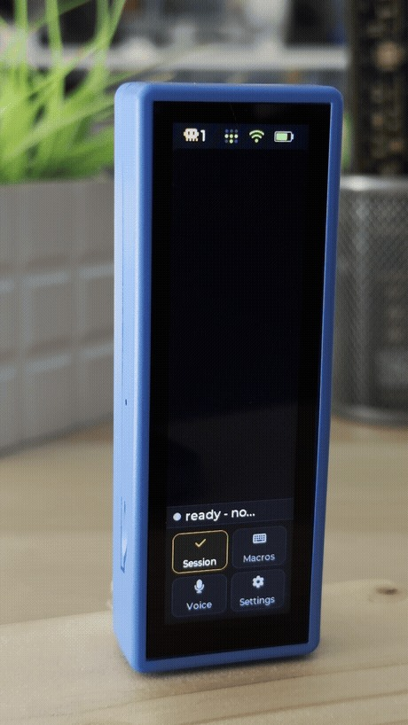
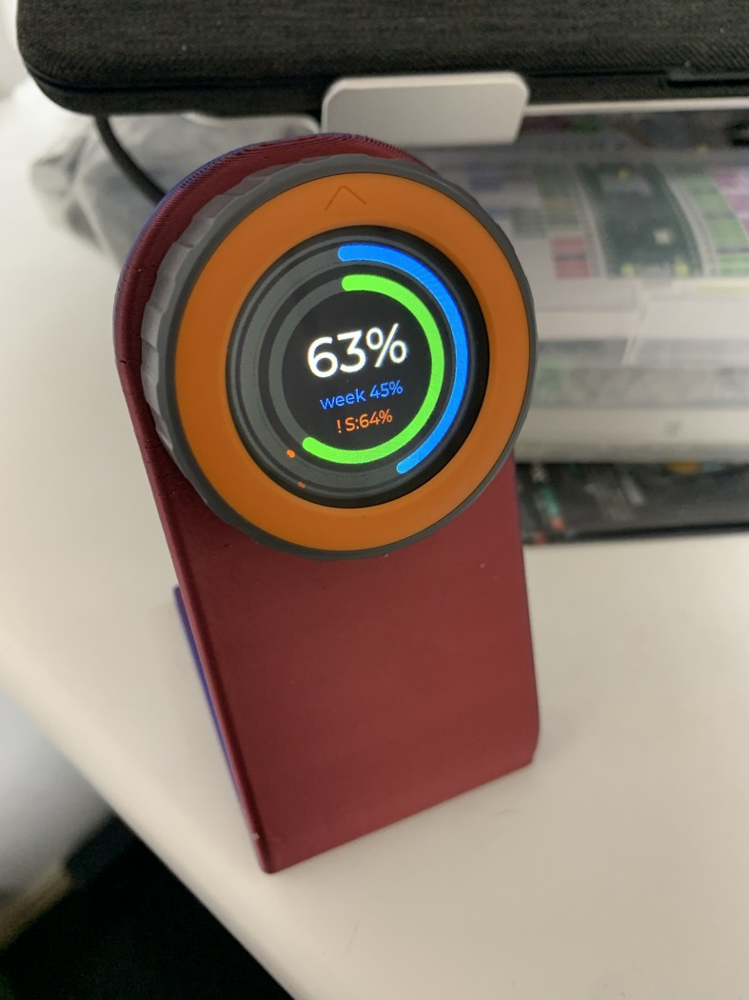
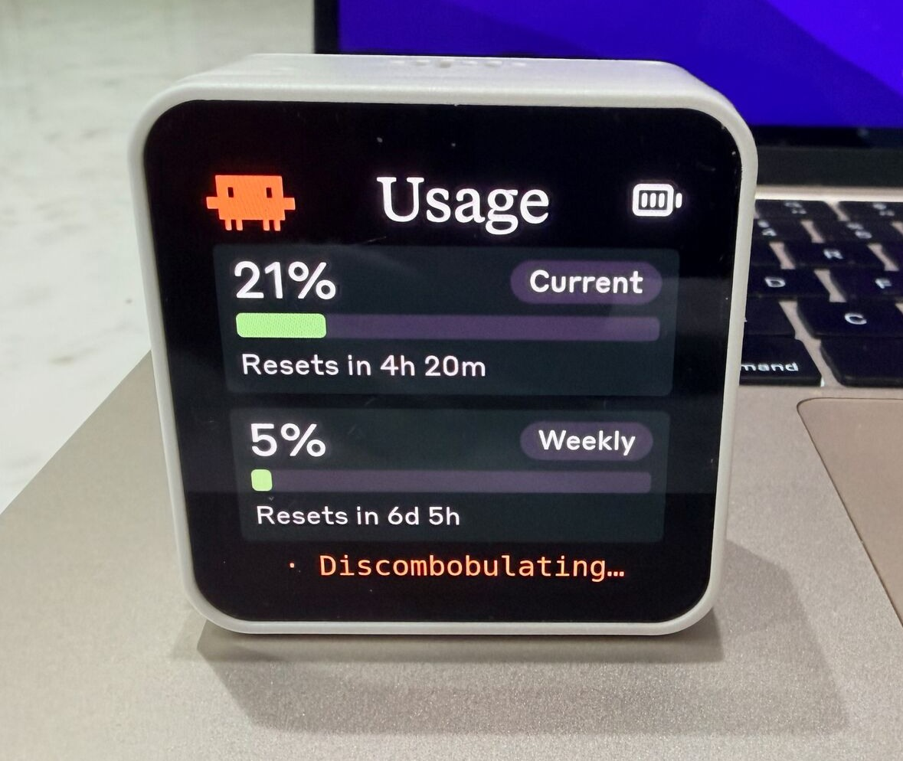
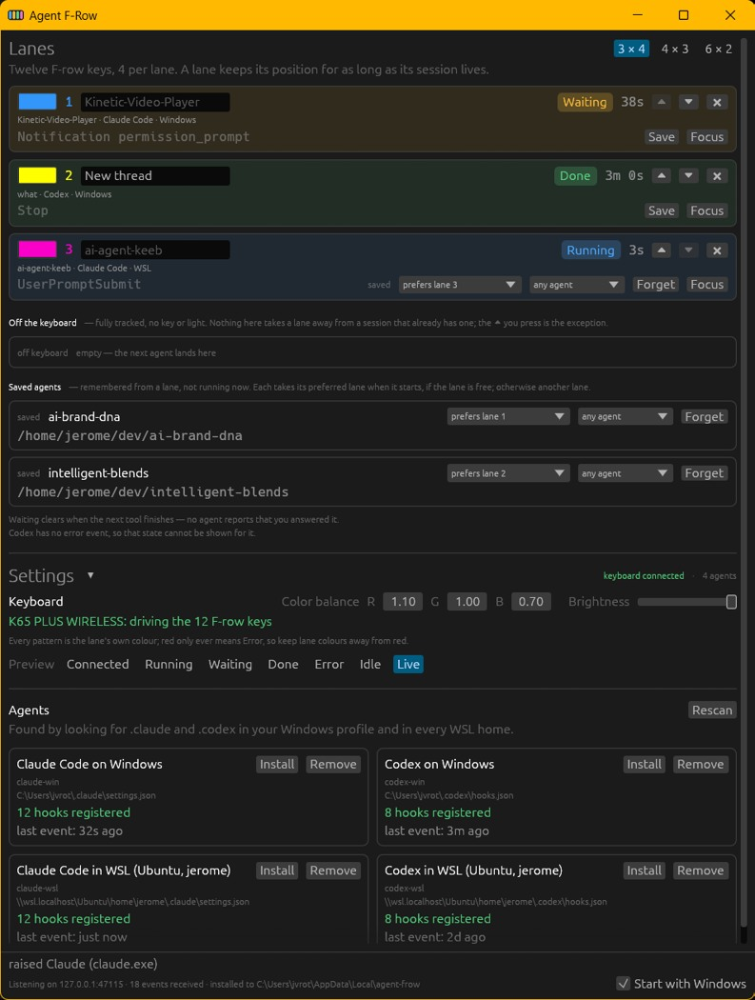
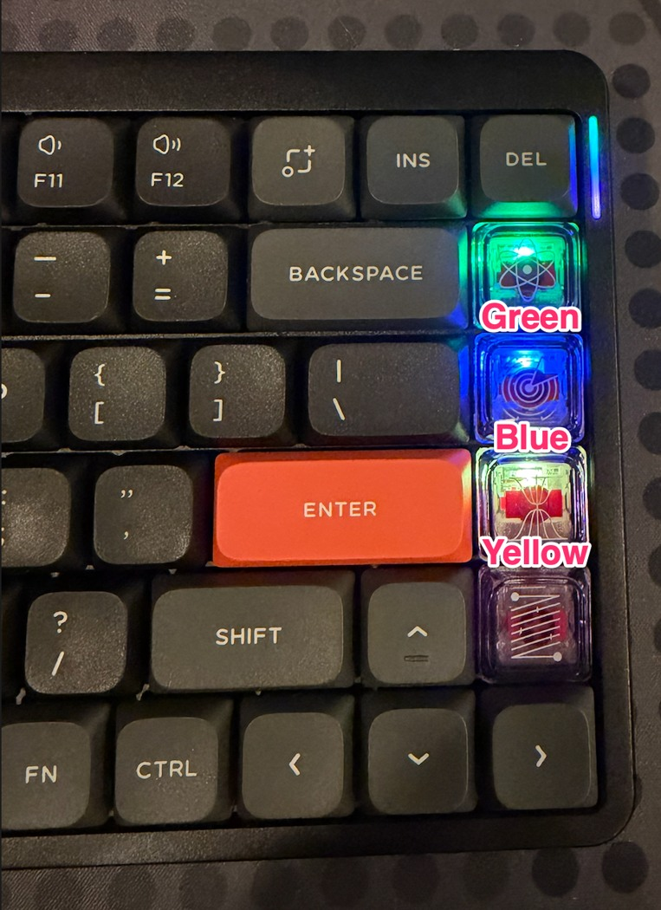
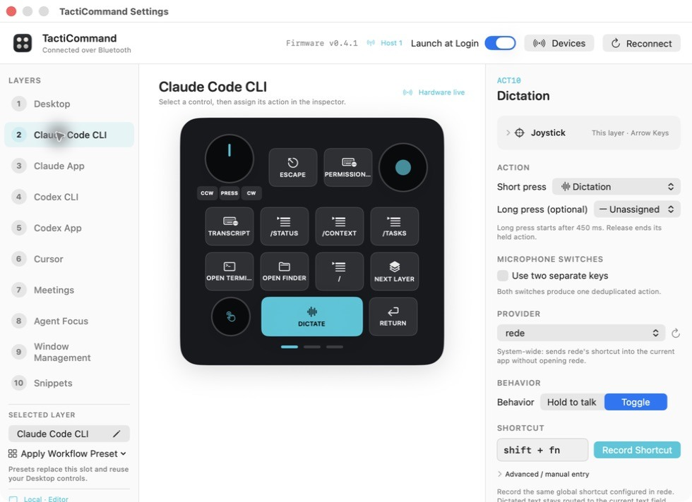
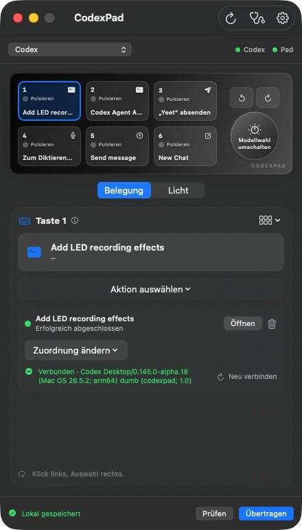
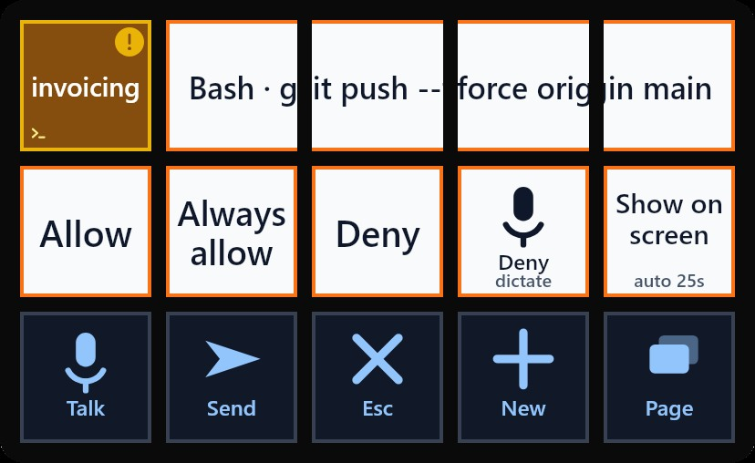

DIY Controllers Built by Heavy Agent Users
Nine projects with real photographs or running interfaces: session targeting, waiting state, voice, approvals, usage and model controls, with implementation limits, maintenance costs and sampling bias.

Sources checked: 6 October 2026. Nine independent projects; the many screen layouts of one AgentDeck do not count as many users. Every featured case includes an author photograph or actual software interface that was downloaded and visually inspected. Photographs, screenshots and promotional renders are distinguished. No simulated imagery was generated, no project was installed, and an author's demonstration is not treated as an independent long-term effectiveness test.
Main Finding
The recurring workflow is: an agent runs in the background → I do something else → it needs me → I know which session → I return to the correct task. A physical controller's central value comes from completing that loop, rather than adding another generic AI button. Speech, question choices, usage limits and model adjustment are different tasks and should not be collapsed into a universal dial.
Model selection, reasoning effort within one model, permission mode, and a usage-alert threshold are different controls. Claudial's dial changes only the last. Agent Micro maps the first two separately. AgentDeck currently displays Claude/Codex model and effort read-only; old promotional claims must not be taken as current control support.
Method and Sampling Bias
This is a purposive set of pioneering examples, N=9 projects, not a survey, market-share estimate or usage-frequency statistic. Public English-language GitHub/Reddit sources and coding users willing to build and document hardware are overrepresented. Unpublished failures, ordinary users and Chinese ecosystems are underrepresented. Repository creation is a lower bound on public availability, not the date the first prototype was built. Code, photographs and demonstrations support author-built maturity, not a third-party functional certification. Every cost estimate retains its source; unknown prices are not invented.
Nine Illustrated Cases
1. AgentDeck
Public repository created: 2026-02-20. Status: author-built software/hardware; not installed or independently tested for this research.
Figure 1 · Physical-device photograph. The author's Stream Deck+ photograph: eight top keys, a horizontal LCD strip and four dials, not the aquarium concept image. The README dates the desk photograph to 28 September 2026. Author source
- Form factor: Stream Deck+ with eight keys and four dials; tablets and ESP32 displays can also be reused.
- Concrete task and input: Assign one key to each parallel coding session. A session detail view presents question choices and a fixed Stop action. The current dials cover volume, Claude usage, Codex usage and the launcher.
- Backend: A local daemon aggregates hooks and logs. Answering depends on whether that session has a real control path; not every display is a controller. Model and reasoning effort are currently read-only for Claude/Codex; OpenClaw can use native setting interfaces.
- Cost: Open-source software; an existing computer can be used first. Peripheral prices were not verified, so no bill of materials is invented.
- Failure modes and limits: Older promotional pages still show voice/mode dials; these are not the current default layout. OpenClaw setting changes use requestId plus targetSessionKey to avoid crossing sessions, and timeouts are shown as unavailable.
- Additional first-person source: https://github.com/puritysb/AgentDeck/blob/master/docs/streamdeck-layout.md
2. Claudeq
Public repository created: 2026-06-30. Status: author-built software/hardware; not installed or independently tested for this research.

Play the author’s actual-device demonstration
Figure 2 · Recorded physical-device interaction. Actual footage of a vertical device: a finger taps after question choices appear. The frame shows the narrow touch display, enclosure and real desk. Author source
- Form factor: Waveshare ESP32-S3 3.49-inch touchscreen with BOOT/PWR/RESET buttons on the side.
- Concrete task and input: A bell identifies sessions awaiting a response when terminal questions are being missed. Tap dynamic choices; speech is transcribed locally before Send/Cancel. Model and effort selections are opened separately for each session.
- Backend: Node and tmux bridge over Wi-Fi/WebSocket; sessions are launched with claudeq. LAN/Tailscale access is possible, and device pairing/trust must be maintained.
- Cost: The author's Reddit post describes a roughly $30 board, excluding setup time. Local speech needs an approximately 148 MB model and whisper.cpp.
- Failure modes and limits: This is more than three generic Yes keys: the UI must retain question type, session identity and a voice preview. Long-press screen locking limits pocket touches. Model/effort changes use command input; behavior across every version was not independently verified.
- Additional first-person source: https://www.reddit.com/r/coolgithubprojects/comments/1uvwodt/claudeq_turn_a_30_esp32_touchscreen_into_a/
3. Claudial
Public repository created: 2026-06-05. Status: author-built software/hardware; not installed or independently tested for this research.

Figure 3 · Physical-device photograph. A circular color usage meter on an M5Stack Dial in a red stand. The central percentage and outer double rings are visible. Author source
- Form factor: 1.28-inch 240×240 circular display, rotary encoder and touch input.
- Concrete task and input: Glance at session/week usage while coding. A short touch selects which alert threshold to adjust; each dial step changes it by ±1%. Touch mutes alerts. Approaching the threshold triggers two beeps; reaching it triggers red flashing and continuous sound.
- Backend: A Go daemon on the PC reads credentials/probes rate-limit headers and sends only numeric values over BLE GATT. Service credentials are not stored on the device.
- Cost: Hardware price was not rechecked. The README estimates about $0.019 per day for one minimal request every 60 seconds; this is the author's estimate, not a bill measured for this research.
- Failure modes and limits: The dial changes an alert threshold, not the model or reasoning effort. A resident service, BLE and token renewal are required. Cached values dim and offline status is separate. macOS was not tested.
4. Clawdmeter
Public repository created: 2026-05-11. Status: author-built software/hardware; not installed or independently tested for this research.

Figure 4 · Physical-device photograph. The author's usage photograph shows a white-framed ESP32 display beside a laptop, with Current 21%, Weekly 5% and reset countdowns. Author source
- Form factor: ESP32-S3 with a 2.16-inch AMOLED display and side buttons.
- Concrete task and input: View Claude usage and reset times on the desk; switch between character and usage pages. The side buttons directly send Space and Shift+Tab for voice and mode switching.
- Backend: A host daemon reads usage roughly every 60 seconds and updates the display over BLE. Buttons use a separate BLE HID keyboard path.
- Cost: Open-source software plus a board and power supply. Minimal Haiku polling requests have nonzero consumption; the author's 'basically free' wording is not treated as zero cost.
- Failure modes and limits: HID does not carry a session ID: keys go to the paired computer's current focus. The display can retain the last synchronized value, so freshness matters. Bluetooth permissions, pairing and Token 401 errors are concrete maintenance issues.
5. Agent F-Row
Public repository created: 2026-08-19. Status: author-built software/hardware; not installed or independently tested for this research.

Figure 5 · Running-software screenshot. The author's Windows application screenshot shows colored session rows, state, context/usage and saved configuration. It is not a photograph of an RGB keyboard. Author source
- Form factor: Reuses Corsair/Keychron RGB function keys, a numeric keypad or Stream Deck.
- Concrete task and input: Three four-key lanes help identify which session is waiting. First press a key to focus the correct window; when Waiting, use up/down/Enter to respond.
- Backend: Windows/WSL hooks feed a local state machine and iCUE/USB devices. Navigation keys are sent only after the intended window is verified to have focus.
- Cost: An existing compatible keyboard can avoid buying new hardware. Third-party lighting/firmware mapping is still required; setup time is unknown.
- Failure modes and limits: It does not return an approval through the hook. Enter inside the window can still constitute a user decision. Missing events must not be interpreted as completion. Hardware slots are limited; overflow sessions remain in software.
6. QMK Agent Macropad
Public repository created: 2026-08-03. Status: author-built software/hardware; not installed or independently tested for this research.

Figure 6 · Physical-device photograph. An actual NuPhy Air75 V2 photograph shows a column of colored keys on the right, assigned to session slots rather than decorative RGB alone. Author source
- Form factor: QMK keyboards/Keychron numeric keypads; an earlier version used an Adafruit 12-key OLED macropad.
- Concrete task and input: One light per agent distinguishes thinking, tool execution, completion, input needed and suspected stalls. A key brings the matching Terminal/IDE window forward.
- Backend: Agent-specific hooks feed a Unix-socket daemon, a binary USB HID protocol and QMK. macOS AppleScript handles focus routing.
- Cost: Reuses an existing QMK board but requires firmware compilation/flashing and hook adaptation. No independently checkable complete bill of materials was found.
- Failure modes and limits: Focus routing has only been validated on macOS. VIA and the daemon compete for exclusive HID access; the author releases it after the last session ends. 'Tool stalled' is a timeout inference.
7. TactiCommand
Public repository created: 2026-09-11. Status: author-built software/hardware; not installed or independently tested for this research.

Figure 7 · Actual configuration-interface screenshot. A native Mac configuration editor shows the Claude Code CLI layer, physical-key mappings and action parameters. The drawn controller is part of the application UI, not a claimed device photograph. Author source
- Form factor: DIY companion software for Creator Micro 2/Codex Micro, with ten layers plus dial/joystick controls.
- Concrete task and input: Temporarily switch layers with the active app; use dictation shortcuts, cancel, /context, /tasks, /diff and /review. A separate Agent Focus layer jumps to six sessions.
- Backend: SwiftUI with local RPC/keyboard automation; normalized agent state drives RGB. Dictation is actually processed by the chosen speech service.
- Cost: Open source, but requires existing commercial hardware and an Xcode build. No notarized public binary is available.
- Failure modes and limits: Only six Agent keys support independently controlled RGB; the other keys share a backlight zone. Independently colored software previews are not proof of hardware support. A shortcut layer is not semantic object recognition.
8. Agent Micro
Public repository created: 2026-07-17. Status: author-built software/hardware; not installed or independently tested for this research.

Figure 8 · Actual application screenshot. A repository DesignQA screenshot under the former name CodexPad shows six-key mappings, dial-based model switching, a completed session and connection status. It is an application screenshot, not a hardware photo. Author source
- Form factor: SinLoon six-mechanical-key/one-dial board with reflashed CH552G firmware.
- Concrete task and input: In the author's setup, the top-right key switches Claude/Codex profiles and session keys breathe while running. Turning the dial changes effort; pressing opens model selection; turning while held changes model. The bottom-left key is push-to-talk.
- Backend: A macOS 14+ local app and custom Raw HID protocol carry press/release events and six independent RGB channels. Extra Claude hooks provide waiting/completion/failure state.
- Cost: The Reddit author's title quotes about $25 and explains avoiding roughly $80 shipping to Germany. This is not a reproducible tax-inclusive total-cost quote.
- Failure modes and limits: Developer Preview source that must be built locally; only a specific board is validated. Flashing cannot restore the factory firmware, and lookalike boards are not guaranteed compatible. Codex integration is more complete than Claude integration.
- Additional first-person source: https://www.reddit.com/r/codex/comments/1vlpw6f/i_built_an_opensource_25_codex_micro_alternative/
9. Conn
Public repository created: 2026-07-16. Status: author-built software/hardware; not installed or independently tested for this research.

Figure 9 · Actual software-interface image. The author's 15-tile web/Deck interface shows a Bash command and session name above Allow, Always allow, Deny, voice rejection and return-to-window actions. This is not presented as a physical Stream Deck photograph. Author source
- Form factor: A 15-key Stream Deck or a browser grid requiring no hardware.
- Concrete task and input: Parallel Claude Code sessions each occupy a key. Real permission requests change the key surface; approval/rejection is bound to the request. Users can dictate a rejection reason or open a new worktree.
- Backend: HTTP permission hooks carry session identity. A structured decision and dictated reason return to that same request. Targeting a CLI process differs from sending shortcuts to a visible desktop tab.
- Cost: Open source. Dynamic interpretation of ordinary choices adds model usage; the author reports a 10–15-second wait. Buying hardware is optional.
- Failure modes and limits: The author documented an extra Return approving an unread plan; macros are now blocked while Waiting. Bridge failure or a 30-second timeout falls back to the original dialog, never auto-allow. Always allow is not synonymous with Yes.
Feature-Presence Matrix: Project Documentation, Not a Percentage of User Demand
Y = explicitly implemented; limited = particular agents only; navigation = up/down/Enter in the correctly focused window, not structured approval; macro = a generic macro can carry it, not proof of a dedicated safe implementation; ? = not established; — = not found in this evidence set, not proof of absolute absence.
| Project | Voice/PTT | Request-bound approval/questions | Model switch | Effort | Session targeting | Running/waiting state | Usage | Stop/context |
|---|---|---|---|---|---|---|---|---|
| AgentDeck | ? | Y | limited | limited | Y | Y | Y | Y |
| Claudeq | Y | Y | Y | Y | Y | Y | — | macro |
| Claudial | — | — | — | — | — | — | Y | — |
| Clawdmeter | Y | — | — | — | — | — | Y | — |
| Agent F-Row | — | navigation | — | — | Y | Y | Y | — |
| QMK Agent Macropad | — | — | — | — | Y | Y | — | — |
| TactiCommand | Y | — | — | — | Y | Y | — | Y |
| Agent Micro | Y | ? | Y | Y | Y | Y | — | ? |
| Conn | Y | Y | — | — | Y | Y | — | Y |
Counting only Y: session targeting 7/9, agent state 7/9, speech 5/9 and usage 4/9. These are feature codes within this manually selected corpus, not market prevalence or actual frequency of use. Two cases explicitly implement both model and effort controls, with another limited to a specific integration; low occurrence is not automatically interpreted as low importance.
Priorities: Recurring Needs, Observed Actions and Consequences of Errors
- P0: Identify the target before showing that it needs attention. AgentDeck, Claudeq, Conn, F-Row, QMK, TactiCommand and Agent Micro repeatedly bind controls to sessions. Show project/session, the reason for waiting and time spent waiting. A single focus handles only the foreground task; background queues must remain visible. A model name cannot replace a session name.
- P0: Keep Stop/Review stable; approvals need a scope. This follows from Conn's real unintended approval, Claudeq's dynamic questions and lock screen, F-Row's focus-before-navigation, and the cost of crossing parallel sessions. Show the action, object and one-time versus ongoing authorization. Keep Stop in a stable physical position. Never reduce “Always” to an unexplained Yes.
- P1: Speech is low-friction supplementary input and must be correctable. Five cases explicitly provide speech, but some merely send HID shortcuts while others transcribe locally. Separate push-to-talk capture, transcription and sending. Claudeq's review-before-send and Conn's reasoned rejection are more informative than blindly sending Enter.
- P1: Make usage and freshness glanceable. Claudial/Clawdmeter dedicate hardware to it; AgentDeck/F-Row reuse displays. Usage is not task progress. Show reset time, last update and disconnected/stale states. A simple circular display can be better than a miniature chat window.
- P2, but semantics must be exact: Model, effort and permission mode. Agent Micro separates turning from press-and-turn; Claudeq uses distinct menus. The backend should provide allowed values, scope (current session/global/next turn) and a read-back value. Do not invent low/medium/high choices.
- P2: Context operations, macros and recovery. /compact, /context, review and continue have evidence. Retry/pause are not repeatedly verified standalone controls in this corpus and should not be marketed as common standards. More macros mean more setup amortization, shortcut conflicts and version drift.
Design Implications Derived from the Cases
These are research recommendations, not claims that existing products already implement them.
- Keep Speak, Stop and Back/Review in a stable action area. Use the dynamic area for the target session, current question/choices and state timestamp. Explicitly show unknown state rather than only a thinking animation.
- Bind the task before acting on the request: session ID, request ID and expiry. Read back model/effort changes. Reject an old selection when the target changes.
- Treat the computer-side bridge as part of the product: installation, signing, system permissions, version compatibility, reconnecting, updates and diagnosis all contribute to experience cost. Plug-and-play HID guarantees key events, not the correct app, object or task.
- Separate hardware from the service. Test the same UI on an old phone or browser before selecting a small display, three keys or a dial. Measure time and errors across the whole “return to the correct task and handle it safely” loop before counting saved clicks.
- Extending to Figma/PPT/Gmail still requires object APIs, selection and thread IDs. This corpus primarily supports coding-agent control, not general cross-application context understanding.
Appendix: Useful Leads That Did Not Meet the Main Photograph/Screenshot Criterion
- Claude Deck, repository created 2026-07-15: two dials separately adjust model per chat and effort globally; pressing compacts context. The author claims hardware validation, but the accessible image is a production-code promotional render, not a photograph or captured screen, so it is excluded from N. Reverse-engineered extension patches breaking after automatic updates and read-back verification are useful counterexamples. macOS remains experimental.
- usage-touchbar: no genuine screenshot was found in the main repository. The GIF from tpklo/claude-usage-touchbar is explicitly headless-rendered and is not called a Touch Bar photograph. Private-API and Keychain dependencies warrant later verification.
- agentpad13: the main repository image is explicitly a CAD render. A roughly $65 Reddit estimate and promises of future agent plugins do not establish a working integration.
- claude-keys: public USB HID source sends 1/2/3 from three keys, but no actual photograph was obtained. Default number keys are not a safe-approval API.
- Foot-pedal routing case, 2026-08-14: Olympus RS-27H and KDE/Wayland. Global-shortcut interception is deterministic event routing rather than an accidental race. No photograph was obtained, so it is not padded into the main hardware sample.
- Deck for Claude and Neo Agent Deck: attractive production-renderer/promotional graphics were downloaded but not treated as hardware photographs. Consuming the first wake-up key to avoid accidental approval and changing accessibility-button labels are valuable issues in the former.
Commercial Hardware as a Boundary Comparison
Work Louder Codex Micro is purchased hardware and is not counted as a separate DIY pioneer. TactiCommand investigates the software layer a user added; Agent Micro actually replaces firmware and the host bridge on a cheap generic board. The distinction is integration, maintainability and DIY cost, not “more buttons means more intelligence.”
Media and Verification
Each figure retains its author source and distinguishes software screenshots from device photographs. Public posting does not grant unrestricted commercial redistribution. The Claudeq clip was converted from the author's GIF to H.264; no frames were generated or reconstructed.